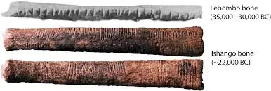
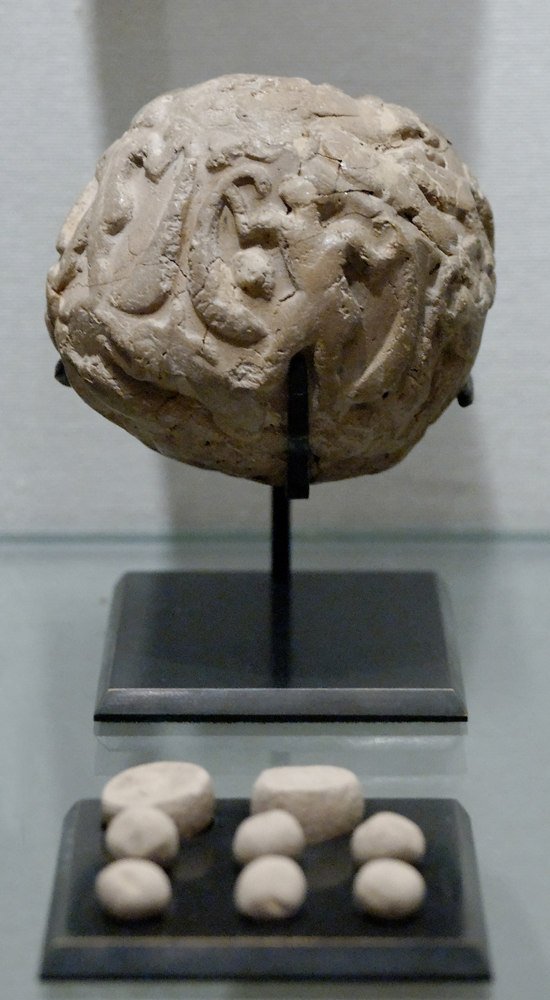

Bones and record keeping
The use of fingers
Before any number systems were created, what do you think the easiest way to count was? Using our hands! Our two hands with five fingers on each amount to the small number of 10, but including toes it would amount to 20. This would have been a pretty big number before, but as things started to evolve and grow,there were more amounts to count, and obviously 20 was far too small. Well, take a look at your hands for a second and notice the three lines that run across your first four fingers. Now, using your thumb, if you go ahead and count all those lines, it will amount to 12. So 12 numbers on each hand, so 24 in total. Now that's better but still not good enough.

The lebombo and ishango bone
The first recorded use of numbers dates back almost 43,000 years, found in South Africa, the Lebombo bone! If you go ahead and take a look at the image on the side, you will see little tally marks running all across the bone. Now this is better than using your fingers, because you can visually see the amount. The founder also suspected that the bone was used during participation in rituals. This bone, if you are curious, was a baboon fibula, the bone that's found in the lower leg.
This bone is usually confused with another bone, called the Ishango bone. This one was found at Ishango in the Democratic Republic of the Congo and dates back almost 20,000 years during the Upper Paleolithic era. Arguments still go around as to what exactly the scratches on the bone were for. Some say they were made to create a better grip on the bone; others say that it was used for astrology purposes, to stand for the numerical notation of a six-month lunar calendar, but the most likely reason for the scratches was that they were used to count and keep track of things. If you look at the image on the side, you will see a chart of all the scratch marks and what all of them most likely meant.


The discovery of record-keeping
How would you think that people back then would keep records of things? They didn't have the notes app to write different amounts down, so what did they use? Well, the earliest known record keeping appeared from a counting system that included clay tokens. The first of these clay tokens was found in the Tell Abu Hureyra, a prehistoric archeological site in the upper Euphrates valley of Syria. Have you ever wondered where the home of some of the first farmers in the world was? Well, now you know!
There were multiple types of tokens made to represent different units. One unit, ten units, and even six tens' units in a sexagesimal system. This was a very smart way of keeping track of things, but there is more. How do you think they stored the clay tokens? They made a solution for that too, to make sure that the tokens wouldn't get altered or lost; they started making clay spheres with a large hollow in the middle where they would keep the clay tokens. Now, if they ever needed to verify the amount that was inside, they would need to break the whole thing, which is a waste of time. So, they made a solution for that too...! Since each token had a different pattern based on its value, they started stamping the outside with the tokens, so that if they needed verification, they could just look at the outside.
